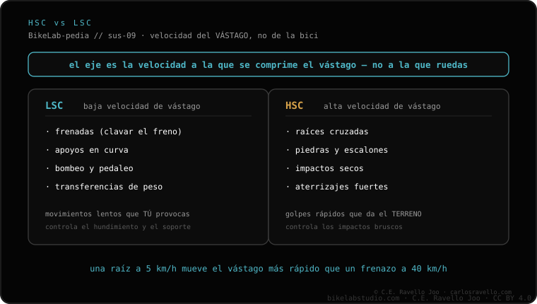

Lo primero que casi nadie tiene claro: la compresión se divide por la velocidad del vástago de la suspensión, no por la velocidad de la bici. Baja velocidad (LSC) = movimientos lentos del vástago (hundirse al frenar, apoyos en curva, bombeo, transferencias de peso): es la que da soporte. Alta velocidad (HSC) = movimientos rápidos (impactos secos, raíces, piedras, aterrizajes): es la que controla los golpes fuertes. Si la horquilla se siente muy dura en golpes secos, mira la HSC; si se va al fondo en apoyos largos, mira la LSC.
El error que arruina más setups es creer que "velocidad" significa la velocidad de la bici. No: es la velocidad a la que se mueve el vástago.
La compresión de baja velocidad actúa cuando el vástago se mueve despacio. Son los gestos lentos: hundirse al frenar, los apoyos en curva, el bombeo del terreno y las transferencias de peso del cuerpo. Es la compresión que da soporte y evita que la suspensión se hunda en cada movimiento.
La compresión de alta velocidad actúa cuando el vástago se mueve rápido. Son los impactos secos: raíces, piedras y aterrizajes. Es la que controla los golpes fuertes y los topes bruscos sin endurecer el resto del recorrido.

Dinos qué te molesta (golpes secos o se hunde en apoyos) y tu suspensión, y te decimos si es HSC o LSC. Escríbenos por WhatsApp
No, es la del vástago de la suspensión. Puedes ir despacio y meter HSC al golpear una raíz, o ir rápido y tener LSC en una curva.
Los movimientos lentos del vástago: frenadas, apoyos en curva, bombeo y transferencias de peso. Da soporte.
Los movimientos rápidos: impactos secos, raíces, piedras y aterrizajes. Controla los golpes fuertes.
© 2026 BikeLab Studio. Contenido bajo CC BY 4.0: puedes copiarlo, traducirlo y publicarlo, incluso con fines comerciales. La cita es obligatoria. Sin atribución, la licencia se revoca de forma automática (CC BY 4.0, §6.a) y el uso pasa a ser una infracción de derechos de autor: solicitamos la retirada del contenido y su desindexación. · Diseño y propiedad: Carlos Ravello Joo